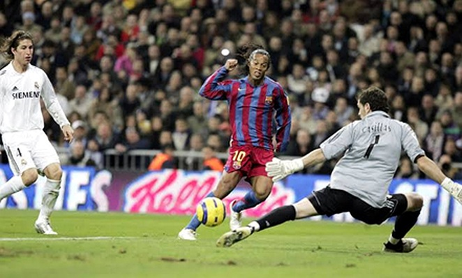
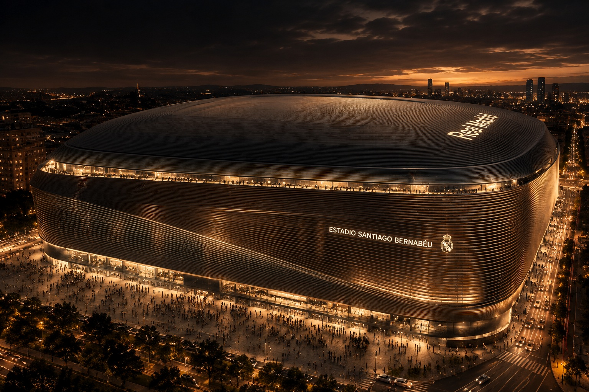
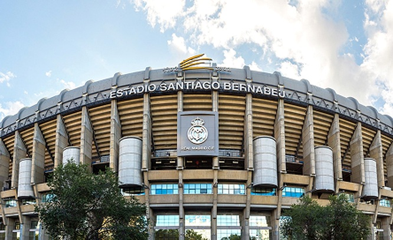
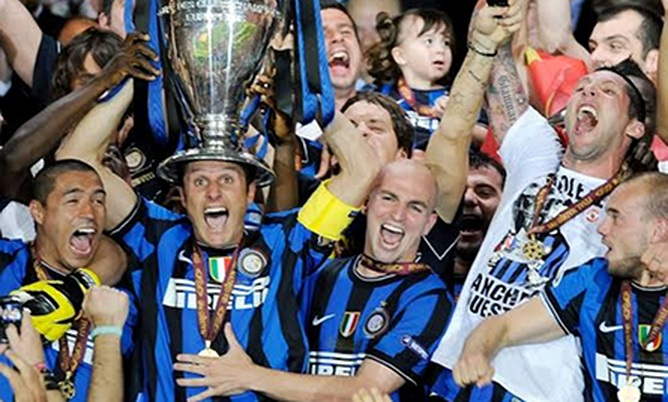
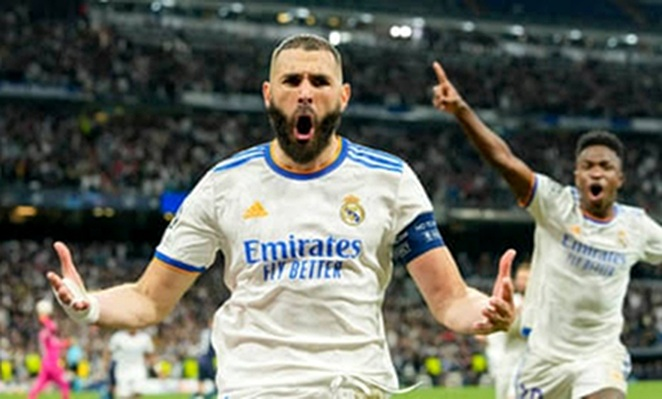

2005
LA STANDING OVATION A RONALDINHO
L'intero Bernabéu si alza in piedi per applaudire il fuoriclasse del Barcellona, autore di una prestazione divina nel Clásico.


↗
MADRID, SPAGNA
El templo de las Copas de Europa.
Inaugurato nel dicembre 1947 nel cuore del Paseo de la Castellana per volere del visionario presidente Santiago Bernabéu, questo stadio è diventato la reggia incontrastata della squadra più titolata al mondo, rinnovandosi costantemente fino alla modernità assoluta.

APRI IMMAGINE ↗L'intero Bernabéu si alza in piedi per applaudire il fuoriclasse del Barcellona, autore di una prestazione divina nel Clásico.

↗La doppietta di Diego Milito stende il Bayern Monaco e regala ai nerazzurri di José Mourinho uno storico e leggendario triplete.

↗Sotto di un gol al 90', i Blancos segnano due reti in un minuto con Rodrygo e poi la vincono ai supplementari con Benzema, firmando una rimonta epica.

↗